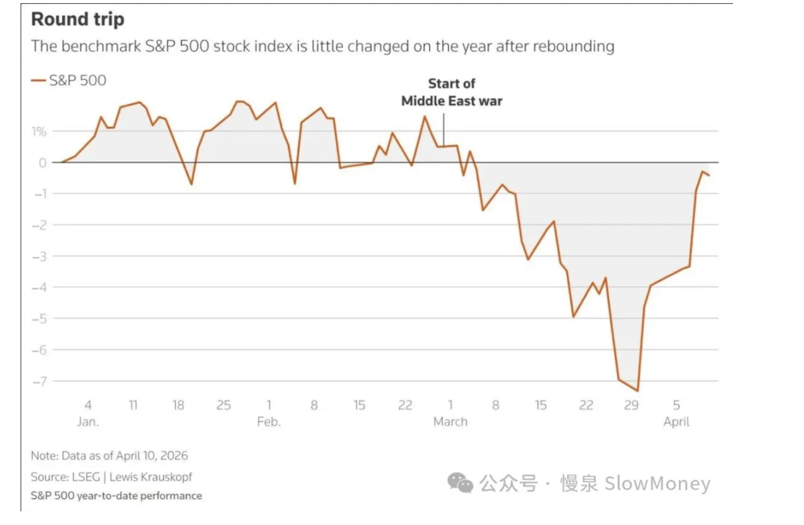
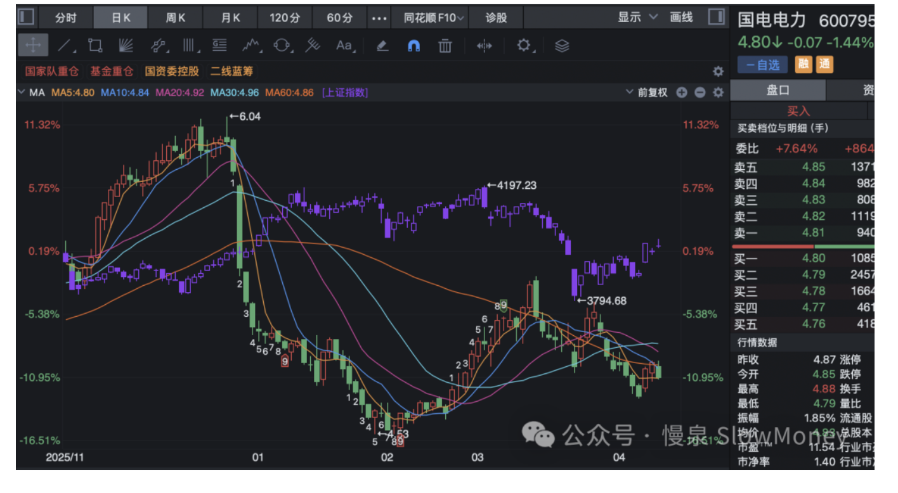

投资备忘20260412-The Show Must Go On
2026-04-06 — 2026-04-12 · W15 · 周度备忘（补档）
这周的市场和地缘像极了安排好的一场 show：有人负责"起承"、有人负责"转"、有人负责合（和）。起承已经差不多了，双方突然又可以谈了，局势变化之快让投资者直呼万岁——这才是我们认识的川宝，这才是我们熟悉的 TACO。脑袋里浮现的全是特朗普穿着弗莱迪的背心高唱 "The show must go on"，市场当前还是走到了 buy the dip 的剧本。
本周市场
本周市场先跌后涨，在反转事件影响下放量反弹，上证指数再次尝试站上 4000 点，成交量升至 2.3 万亿以上，创业板指数甚至创出年内新高。经历了过去两周地板上的摩擦之后，主要的指数都有明显的反弹——只是很多个股还在地板被按着，资金活力集中在热门主线的龙头公司。结构上市场重新回到热点：TMT、电力设备、化工反弹明显；防守资产银行、油煤电力下跌；消费主力仍然萎靡，医药资产因为前期的表现较好，反弹阶段略微承压。
| 指数 | 本周涨跌幅 |
|---|---|
| Wind 全 A | +5.15% |
| 沪深 300 | +4.14% |
| 恒生科技 | +3.87% |
市场分析：
- 地缘事件的峰回路转是最大的变化，使得整个市场的风险偏好大幅提升——欧美股市因为战争下跌的坑基本被填平，特别是标普和纳斯达克基本完成修复，国内和港股的走势还相对落后；
- 业绩期对业绩和产业趋势的关注提升，行情有更明显的结构性——AI 涉及的电子、通信板块创新高股票增加较多，新能源相关同样。

组合备忘
组合本周表现好于市场，主要是产业主题 AI 硬件资产和宏观通胀主题涨幅带动组合的表现，部分契合业绩和市场偏好，化工已经接近新高的位置附近；产业主题的机器人智驾，汽车的 beta 仍然偏弱；DA 资产持仓较少，调整是收集筹码的阶段。
| 类别 | 本周涨跌幅 | YTD |
|---|---|---|
| Beta 策略 | +5.40% | +2.76% |
| Macro 策略 | +4.97% | +4.3% |
| Beta 仓位 | 80% | — |
| Macro 仓位（含转债 20%） | 61% | — |
市场展望
运行模式：市场从 4100 下跌到 3800，当前反弹至 4000，正在完成本轮下跌以来的修复，下周是否能成功完成需要做确认。
- 地缘变化仍然是风险偏好的核心——战争刚开始打就谈判成功的概率，可以搜一下，挺少见的；
- 国内的宏观亮点不多——4 月底有 zzj 会议可以观察一下，预计不会有什么影响，但是经济安全的考量肯定会提升，特别是能源安全、自主可控；
- 资金顺势——变化是冲突期间中国产业链和资产展示的韧性。还记得 1 月到 2 月底的国家队指数调控么？对指数的调节玩明白了；同时国内的产业链生产展示了肌肉，对于资金的吸引力中期是增强的。

操作上：当前持仓的基础上，买入慢一点等待场子热起来，卖出和交易仓位坚决一点，仓位维持区间；抓机会完成 macro 策略的整体调仓，更稳健的低波动。
The Show Must Go On
战争的 show
横向扩大战局让人意识到：大国对大国的战争可以通过威胁第三方达成目标。站在第三方的立场上，这就像一个饭局——主桌的美以跟门口的伊朗有矛盾干了起来，伊朗二话不说直接把桌子掀了，主桌上的人都吓尿了。通过控制霍尔木兹海峡相当于掐死了全球经济的一半血管，你打我我就让大家都过不好。全球化之后的大国对大国的战争，也许可以斩首 + 产业链封锁的方式进行——反正你也不敢来地面进攻。
资本市场的 show
入戏太深，都是戏中人。海外股市上涨持续时间太长，如果谈判顺利又会强化 TACO 交易——特朗普和投资者都入戏太深，难以自拔。
不演了的风险极大。如果这个 show 不继续了，特朗普和全球资本市场都需要考虑后事——不要说中期选举可能很快被背后资金抛弃，有些迹象已经显示战争可能造成的分裂；资本市场更是一会 Mag 7、一会科技革命、一会 HALO，总能找到自己的高光时刻，而且是三年翻番、10 年五倍的指数。
俗话说，戏比天大，该演就演吧——谈不好还谈不坏么。上期钩子的答案：① BUY THEn DIP 的分晓——市场用 +5.15% 的大反弹投票，暂时回到了 buy the dip 的剧本；② zzj 会议——本期预判无大影响但经济安全（能源安全、自主可控）考量提升，月底验证；③ 一季报结构亮点——电子、通信创新高股票增加，业绩期结构性行情兑现。新钩子：① 4000 点修复完成与否的确认；② 谈判从"能谈"到"谈成"的距离；③ 组合 YTD 双双转正后，macro 策略整体调仓（更稳健低波动）的执行。对账窗口：2026 年 4 月底（zzj 会议 + 一季报收官）。